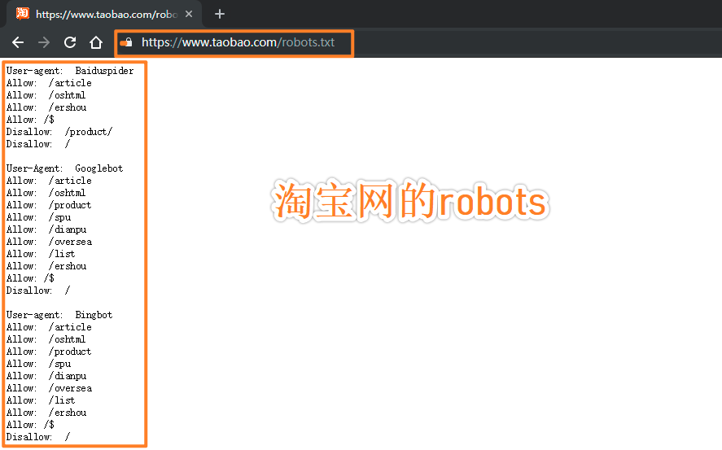

原文出处:本文由博客园博主郭楷丰提供。
原文连接:https://www.cnblogs.com/guokaifeng/p/11225698.html
原文连接:https://www.cnblogs.com/guokaifeng/p/11225698.html
初识爬虫

what is 爬虫？
形象概念
爬虫，即网络爬虫，大家可以理解为在网络上爬行的一直蜘蛛，互联网就比作一张大网，而爬虫便是在这张网上爬来爬去的蜘蛛咯，
如果它遇到资源，那么它就会抓取下来。想抓取什么？这个由你来控制它。学术概念
爬虫就是通过编写程序模拟浏览器上网，让其去互联网上抓取数据的过程。爬虫的价值
为什么要学习爬虫，学习爬虫能够为我们以后的发展带来那些好处？其实学习爬虫的原因和为我们以后发展带来的好处都是显而易见的，
无论是从实际的应用还是从就业上。
抓取互联网上的数据，为我所用，有了大量的数据，就如同有了一个数据银行一样，下一步做的就是如何将这些爬取的数据产品化，商业化。
从就业的角度来说，爬虫工程师目前来说属于紧缺人才，并且薪资待遇普遍较高所以，深层次地掌握这门技术，对于就业来说，是非常有利的。
有些人学习爬虫可能为了就业或者跳槽。从这个角度来说，爬虫工程师是不错的选择之一。随着大数据时代的来临，爬虫技术的应用将越来越广泛，
在未来会拥有更好的发展空间。爬虫究竟是合法还是违法的？
爬虫作为一种计算机技术就决定了它的中立性，因此爬虫本身在法律上并不被禁止，但是利用爬虫技术获取数据这一行为是具有违法甚至是犯罪的风险的。
所谓具体问题具体分析，正如水果刀本身在法律上并不被禁止使用，但是用来捅人，就不被法律所容忍了。
或者我们可以这么理解：爬虫是用来批量获得网页上的公开信息的，也就是前端显示的数据信息。因此，既然本身就是公开信息，其实就像浏览器一样，
浏览器解析并显示了页面内容，爬虫也是一样，只不过爬虫会批量下载而已，所以是合法的。不合法的情况就是配合爬虫，利用黑客技术攻击网站后台，
窃取后台数据（比如用户数据等）。
举个例子：像谷歌这样的搜索引擎爬虫，每隔几天对全网的网页扫一遍，供大家查阅，各个被扫的网站大都很开心。这种就被定义为“善意爬虫”。
但是像抢票软件这样的爬虫，对着 12306 每秒钟恨不得撸几万次，铁总并不觉得很开心，这种就被定义为“恶意爬虫”。如何避免使用爬虫的过程中违法情况
严格遵守网站设置的robots协议；
在规避反爬虫措施的同时，需要优化自己的代码，避免干扰被访问网站的正常运行；
在使用、传播抓取到的信息时，应审查所抓取的内容，如发现属于用户的个人信息、隐私或者他人的商业秘密的，应及时停止并删除。
"""
可以说在我们身边的网络上已经密密麻麻爬满了各种网络爬虫，它们善恶不同，各怀心思。而越是每个人切身利益所在的地方，
就越是爬满了爬虫。所以爬虫是趋利的，它们永远会向有利益的地方爬行。技术本身是无罪的，问题往往出在人无限的欲望上。
因此爬虫开发者的道德自持和企业经营者的良知才是避免触碰法律底线的根本所在。
"""robots协议
几乎是和爬虫技术诞生的同一时刻，反爬虫技术也诞生了。在90年代开始有搜索引擎网站利用爬虫技术抓取网站时，
一些搜索引擎从业者和网站站长通过邮件讨论定下了一项“君子协议”—— robots.txt。即网站有权规定网站中哪些内容可以被爬虫抓取，
哪些内容不可以被爬虫抓取。这样既可以保护隐私和敏感信息，又可以被搜索引擎收录、增加流量。
历史上第一桩关于爬虫的官司诞生在2000年，eBay将一家聚合价格信息的比价网站BE告上了法庭，
eBay声称自己已经将哪些信息不能抓取写进了robots协议中，但BE违反了这一协议。但BE认为eBay上的内容属于用户集体贡献而不归用户所有，
爬虫协议不能用作法律参考。最后经过业内反复讨论和法庭上的几轮唇枪舌战，最终以eBay胜诉告终，也开了用爬虫robots协议作为主要参考的先河。
最后，可以通过网站域名 + /robots.txt的形式访问该网站的协议详情，例如：www.taobao.com/robots.txt
可实现爬虫的语言
- php：可以实现爬虫。php被号称是全世界最优美的语言（当然是其自己号称的，就是王婆卖瓜的意思），
但是php在实现爬虫中支持多线程和多进程方面做的不好 - c、c++：可以实现爬虫,但是使用这种方式实现爬虫纯粹是是某些人（大佬们）能力的体现，却不是明智和合理的选择
- java：可以实现爬虫。java可以非常好的处理和实现爬虫，是唯一可以与python并驾齐驱且是python的头号劲敌,但是java实现爬虫代码较为臃肿，
重构成本较大 - python：可以实现爬虫。python实现和处理爬虫语法简单，代码优美，支持的模块繁多，学习成本低，具有非常强大的框架
爬虫的分类
- 通用爬虫：通用爬虫是搜索引擎（Baidu、Google、Yahoo等）“抓取系统”的重要组成部分。主要目的是将互联网上的网页下载到本地，形成一个互联网内容的镜像备份。 简单来讲就是尽可能的；把互联网上的所有的网页下载下来，放到本地服务器里形成备分，在对这些网页做相关处理(提取关键字、去掉广告)，最后提供一个用户检索接口
- 抓取互联网中的一整张页面数据
- 聚焦爬虫：聚焦爬虫是根据指定的需求抓取网络上指定的数据。例如：获取豆瓣上电影的名称和影评，而不是获取整张页面中所有的数据值
- 抓取页面中的局部数据
- 增量式爬虫：增量式是用来检测网站数据更新的情况，且可以将网站更新的数据进行爬取（后期会有章节单独对其展开详细的讲解）
- 用来监测网站数据更新的情况，以便爬取到网站最新更新出来的数据
爬虫的矛与盾
有一个说法是，互联网上50%的流量都是爬虫创造的。这个说法虽然夸张了点，但也体现出了爬虫的无处不在。
爬虫之所以无处不在，是因为爬虫可以为互联网企业带来收益。
对于先关的电商网站来说，很多电商网站是愿意被比价网站或者其他购物信息网站爬取信息的，因为这样能够给他们的商品带来更多流量。
但他们不愿意被其他电商网站获取价格信息和商品描述，因为担心其他电商网站恶意比价或进行抄袭。同时他们又经常去爬其他电商网站的数据，
希望能够看到别人的价格。
这种纠结又复杂的心情就像学霸间的竞争，学霸可以给学渣抄笔记，因为知道学渣再怎么努力也就是六七十分的水平，但学霸对其他学霸一定会严防死守，
因为只有学霸和学霸之间才有真正的竞争。那么这种矛盾如何被解决呢？反爬机制
门户网站通过制定相应的策略和技术手段，防止爬虫程序进行网站数据的爬取。
反反爬策略
爬虫程序通过相应的策略和技术手段，破解门户网站的反爬虫手段，从而爬取到相应的数据。
python爬虫学习视频自取